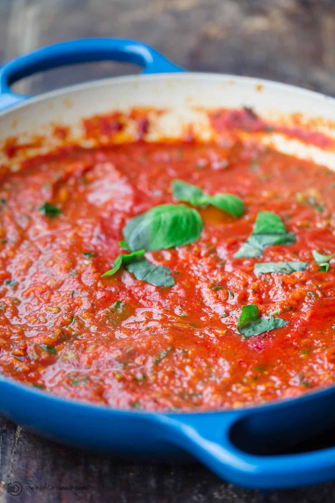

Homemade Spaghetti Sauce

Description
Yummy. Meaty. Delicious. An easy to follow recipe for homemade spaghetti sauce that's perfect for a family or leftovers. Can be frozen and stored in the freezer for quick dinners at a later time. Requires roughly two hours to make but 95% of the time the sauce is sitting on the stove simmering.
Ingredients
- 3/4 lb Ground Beef
- 2 Sweet Italian Sausage, squeeze out of casing
- 1/2 Large Onion, chopped
- 1/2 Large Green Bell Pepper, chopped
- 1 Garlic Cloves, minced
- 15 oz Canned Diced Tomatoes
- 6 oz Canned Tomato Paste
- 1 tsp Brown Sugar
- 1/2 tsp Dried Thyme
- 1 tsp Dried Oregano
- 1 tsp Dried Basil
- 1 tsp Salt
- 1 tsp Black Pepper
- 1 Bay Leaf
- 1 c Beef Broth
Steps
- In a pot, cook meat, onion, green pepper, and garlic on medium heat until meat is browned and vegetables are tender. Drain fat.
- Add in canned tomatoes, tomato paste, brown sugar, oregano, basil, thyme, and bay left. Mix well and cook for about 1 minute.
- Add in beef broth. Mix well. Bring to a boil, then reduce to a simmer, uncovered, for 1.5 - 2 hours. Stir occasionally.
- Remove bay leaf before serving on spaghetti. Can also be used to make lasagna.